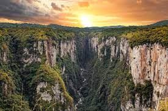
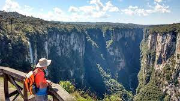

O Rio Grande do Sul, localizado na região Sul do Brasil, oferece uma variedade de pontos turísticos que refletem sua rica história, cultura e belezas naturais. Aqui estão alguns dos principais pontos turísticos do Rio Grande do Sul:
Bem-vindo ao Rio Grande do Sul


Porto Alegre: A capital do estado, Porto Alegre, possui uma atmosfera vibrante e oferece atrações como o Mercado Público, o Parque da Redenção, o Museu de Arte do Rio Grande do Sul e o famoso pôr do sol no Guaíba.

Serra Gaúcha: A região da Serra Gaúcha é famosa por suas cidades charmosas, como Gramado e Canela. Possui uma arquitetura europeia encantadora, gastronomia deliciosa, vinícolas, o Lago Negro, o Mini Mundo e o Parque do Caracol.

Vale dos Vinhedos: Localizado na região da Serra Gaúcha, o Vale dos Vinhedos é uma área vinícola conhecida por suas vinícolas premiadas. É possível visitar as propriedades, degustar vinhos e conhecer o processo de produção.

Parque Nacional Aparados da Serra: Situado na divisa com Santa Catarina, o Parque Nacional Aparados da Serra é famoso pelos seus cânions impressionantes, como o Itaimbezinho e o Fortaleza. Oferece trilhas, vistas panorâmicas e contato com a natureza.